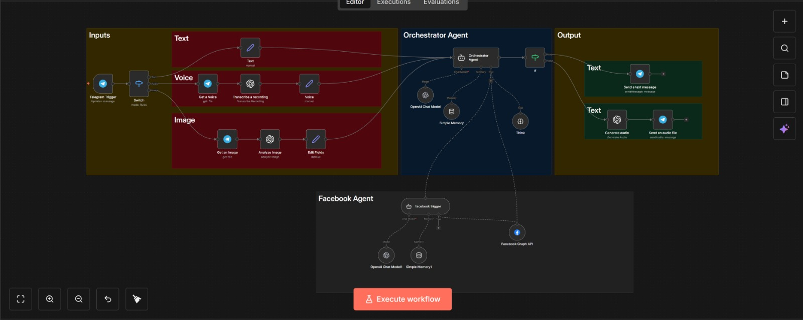
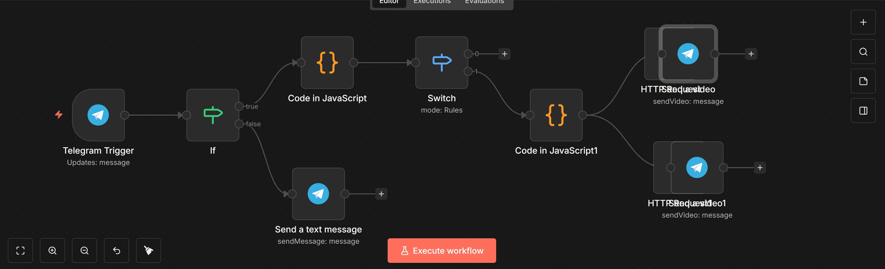

RAG Chatbot
Full RAG pipeline — syncs knowledge from Google Drive, splits & embeds via OpenAI, stores in Pinecone Vector Store, then serves accurate AI answers through a chat interface.

WhatsApp Multi-Agent
WhatsApp-powered AI system handling Text, Voice & Image — connected to Social Media, Web Search, Email & Calendar agents for complete task automation.

Telegram Multi-Agent Bot
Telegram bot with Orchestrator Agent that routes Text, Voice & Image to dedicated pipelines — powered by OpenAI with memory, Think node, and Facebook Agent integration.

HR Automation Agent
An AI-powered HR assistant that sends automated emails to employees via Gmail, schedules meetings and creates events in Google Calendar, and reads employee data from Google Sheets — all triggered through Telegram.

AI Agent — Grok + Sheets + Gmail
A smart AI Agent powered by xAI Grok with memory, connected to Google Sheets for data retrieval and Gmail for automated email sending — all from a single chat trigger.

Messenger Multi-Agent
A full-scale multi-agent system via Webhook — handles Text, Voice & Image with an Orchestrator Agent, plus Social Media, Web Search, Email & Calendar sub-agents.

Form → AI → Google Sheets
Automated pipeline that captures form submissions, processes them through an OpenAI model, merges the AI response with the original data, and appends everything to Google Sheets.

Telegram Video Downloader Bot
A Telegram bot that downloads videos from Instagram and Facebook. Detects the platform via a Switch node, fetches the video through HTTP Request, and sends it back directly in the chat.